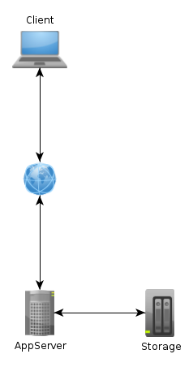
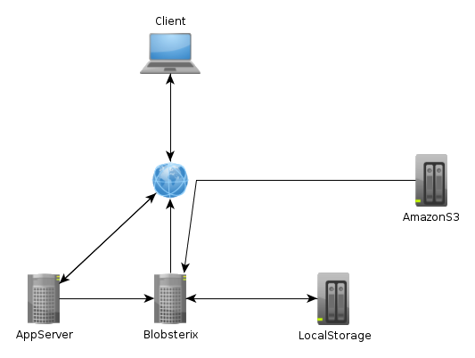
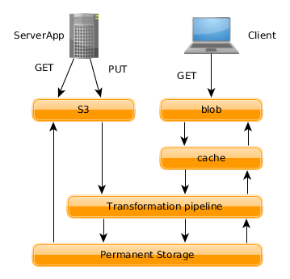

Blobsterix
A simple resource server
Created by Daniel Sudmann
What is it about
Blobsterix is designed to handle your everyday static and user generated content that is supposed to be distributed to your customers
Current State
Most web applications manage all the data served through their application which means
- Extra CPU cycles
- Extra diskspace for all relevant formats
- Extra layer to handle mobile clients
- Extra effort to introduce a new format(image or even dimensions)
- Extra code and dependecies to handle all this
Current State
Blobsterix
as a solution proposal to outsource
- storage management
- content delivery
- content negotiation
- saving the correct formats
- content transformation
Blobsterix
How it does it
Blobsterix is equiped with two web interfaces: S3 and blob
- S3
- blob
S3
The S3 interface is meant for the application itself to upload content just like to amazons s3 service but with a twist. You can tell the server to store the picture in a specific format or even transform it before it is stored.
blob
The blob interface is meant for the clients to get their content. It basicly looks like a normal http resource server but detects the clients needs and dilivers the content in the required format. It also allows for transformations on the fly like rotation, resizing and so on.
Permanent Storage
It allows local and remote storage backends that can be attached. The storage backends can be anything from a simple directory on the filesystem to a amazonS3 server. Those are used to store the basic data objects
Cache Storage
This storage is supposed on the blobsterix server maschine to allow for a fast delivery to the clients. It is also used to for example cache the data from an s3 backend. But the most important thing is here go the different versions of the data objects that are requested by the clients.
Architecture
Backbone
Blobsterix uses goliath as its base to efficiently serve the clients and suspend long running request with the use of fibers and thread pools.
GET,PUT,DELETE APP
Via the S3 interface the the server supports all basic commands that are needed to upload, download and delete data in the permanent storage. Since it is a S3 interface there are already lots of tools for this. And as an extra the store mechanism goes through the same transform pipeline as the client which allows for total control during upload.
GET Client
Now the client only accesses the server via the blob interface which can serve data even directly from the cache or it goes through the transformation pipeline to produce the image in the correct format and which ever other transformation specified and stores the output in the cache.
Demo
Benefits
- only store an image once
- no redundant data (usage checks)
- manage access to data via implemented security features
- easy data migration
- no data handling in your application
- has a carrierwave plugin to get started right away
Thanks for listening
Questions?